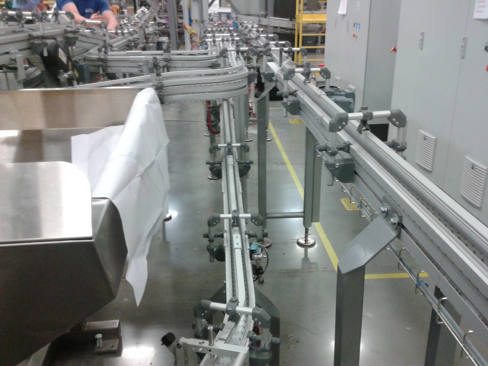

Il nastro più versatile per applicazioni industriali e logistiche.

I nastri trasportatori in PVC rappresentano la soluzione più diffusa per la movimentazione di prodotti in ambito industriale, logistico e packaging. Disponibili in diverse durezze, spessori e finiture superficiali, garantiscono un ottimo compromesso tra resistenza, flessibilità e costo.
Realizziamo nastri in PVC su misura per ogni impianto.
Contattaci